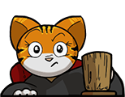

Competitive programming
This is a place where I can keep a log of various competitive programming problems I've done for COMP 321: Programming Challenges at McGill in Fall 2025.
Recently, I've been enjoying trying to solve different puzzles across many formats. I’ve put together this page to collect my solutions and reflections. Each section highlights a different type of puzzle I've work on, with notes on my approach and lessons learned.
This is a place where I can keep a log of various competitive programming problems I've done for COMP 321: Programming Challenges at McGill in Fall 2025.

A log of some selected puzzles I've done given out monthly by Jane Street Capital; a quantitative trading firm.
A place to dump some of my work on weekly problems given out by a math blog called Fiddler on the Proof.